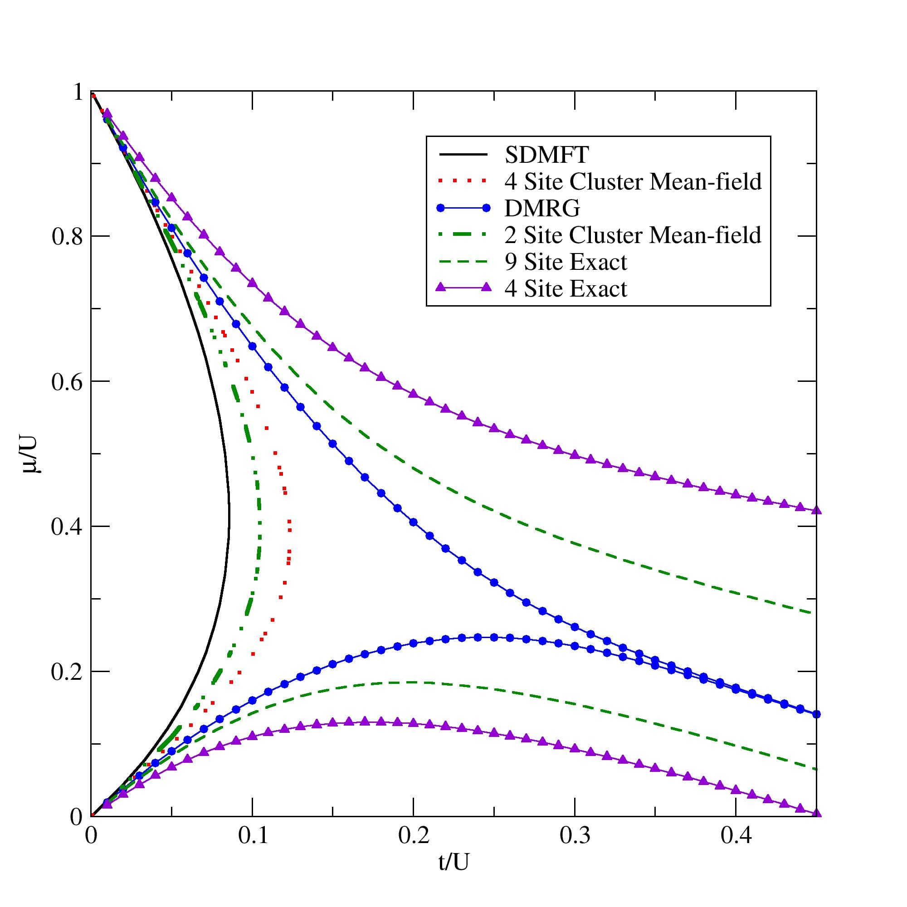

The Density Matrix renormalization group (DMRG) method is the prescription to prevent the
exponential growth of the Hilbert space while providing accurate results for low dimensional systems. Steve White
proposed the method in 1992 as an improvement over the
numerical renormalization group (NRG). The method finds the ground state of the system
by variational approximation through local optimization. As a further development, the
DMRG method was then applied to MPSs that increased the flexibility and power of the DMRG method by
manyfold. The key idea here is to minimize the bond dimension ($a_i$) of the MPS by
eliminating a part of the singular value spectrum that is negligible in weight. For
example, in the low entangled states like the gapped state, the singular
values ($\lambda_k$) decrease exponentially with its spectral position ($k$),
\begin{equation}
\lambda_k \propto e^{-\alpha k}, ~~~ \alpha > 0.
\end{equation}
In a variational process of ground state search, the aim is to minimize the energy
functional defined by,
\begin{equation}
E_g = \frac{\langle \Psi_g | H | \Psi_g \rangle}{\langle \Psi_g | \Psi_g \rangle} \leq \frac{\langle \Psi| H |\Psi \rangle}{\langle \Psi| \Psi \rangle}
\end{equation}
However, in the MPS description, this is a high dimensional non-linear problem to solve.
In this case, the local update using the DMRG sweep helps to optimize the local tensors.
In a so-called two site DMRG process we write the Hamiltonian in the following form
\begin{equation}
H = \sum_k H^k_L \otimes H^k_{i,j} \otimes H^k_R.
\end{equation}
Here, the Hamiltonian is divided into the left and the right part which are called the system parts. In this
case, the local minimization becomes an eigenvalue problem
\begin{equation}\label{eq:mps_eig}
\tilde{H}^{a'\sigma_i'\sigma_j'b'}_{a\sigma_i\sigma_jb} X_{a'\sigma_i'\sigma_j'b'} = E X_{a'\sigma_i'\sigma_j'b'}
\end{equation}
where
\begin{equation}
\tilde{H}^{a'\sigma_i'\sigma_j'b'}_{a\sigma_i\sigma_jb} = \sum_k (\tilde{H}_R^k)_a^{a'} (\tilde{H}_L^k)_b^{b'} (H_{i,j}^k)_{\sigma_i\sigma_j}^{\sigma_i'\sigma_j'}
\end{equation}
Here $\tilde{H}_R^k$ and $\tilde{H}_L^k$ may be obtained from the previous step and
$X_{a'\sigma_i'\sigma_j'b'}$ describes the local wavefunction. The eigenvalue problem
shown in Eq. \ref{eq:mps_eig} can be solved using the Lanczos algorithm. Using an initial guess
that can be extracted from the previous iteration, the process can be made faster,
especially when it is close to the convergence. As a next step, the updated MPS is computed from
$X_{a\sigma_i\sigma_jb}$ after truncating it to the desired bond dimension in the SVD
process.
To get the ground state of a Hamiltonian, the algorithm starts with an arbitrary MPS formed by
an infinite DMRG process with a given bond dimension. A graphical representation is
shown in
figure (a-d) above for convenience. The dotted line shows the connection between the left and the
right parts of the system, and the tensors with the empty circles are the resulting tensor
we create in that step.
The variational optimization of the local tensor is done
by sweeping from left to right and vice-versa through the system length. This process is recognized as the
finite size DMRG process. A
two-site DMRG sweeping
process is graphically presented in
figure (e-l) above for one complete sweep.
Here also the dashed line connects the two parts of the system and the local tensors
marked with open circles are optimized in the process mentioned above in that step.
There are different sources of error in this process of finding the
eigenstates. Most important of
them is the
truncation error,
\begin{equation}
p = \sum_{a=M+1}^D S^2_\alpha = 1 - \sum_{\alpha = 1}^{M} S_{\alpha}^2.
\end{equation}
which arises due to the discarded part of the singular
value spectrum during the DMRG process.
It has been shown that the error in the ground-state energy is proportional to
$p$.
Other than the truncation error, there are two more sources of error. One arises from the iterative process
of the numerical diagonalization and the other from the lack of convergence
within the class of the MPS states. In general, it can be utilized for systems with periodic boundary conditions, infinite
systems and two-dimensional lattices. In this chapter, we have implemented the DMRG method for one-dimensional
open boundary systems where it works
the best. To compare the DMRG method with other methods, mean-field (SDMFT in the figure), CMFT and ED, I have shown the first Mott lobe of the
one-dimensional Bose Hubbard model (the model is presented in the
ED chapter) in the
figure below. Note that, I have considered three-body constraint for this calculation and the
DMRG result is extrapolated to $L=\infty$.

A comparison of different methods. The first Mott lobe of the one-dimensional Bose Hubbard model is shown.
Three body constraint is considered to get the reselts. The legends: SDMFT = site-decoupled mean-field theory, Exact= Eexact diagonalization,
DMRG= density matrix renormalization group.
Related references
-
Ulrich Schollwöck,
The density-matrix renormalization group in the age of matrix product states,
Annals of Physics 326, 96 (2012).
-
G. De Chiara, M. Rizzi, D. Rossini, S. Montangero,
Density Matrix Renormalization Group for Dummies,
arXiv:cond-mat/0603842 (2006).
-
H. Fehske, R. Schneider and A. Weiße (Eds.),
Computational Many-Particle Physics,
Lect. Notes Phys. 739 (2008).
-
www.tensors.net
-
Pioneer: Steven R. White,
Density matrix formulation for quantum renormalization groups,
Phys. Rev. Lett. 69, 2863 (1992).
Free resources
-
ITensors:
High-Performance Tensor Software Inspired By Tensor Diagrams,
developed by Steve White, Miles Stoudenmire, et al.
-
TeNPy:
Tensor Network Python,
developed by the group of Frank Pollmann.
Explore other numerical methods